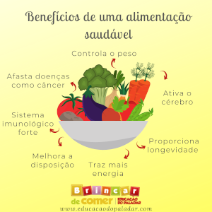

Qual os benefícios de uma boa alimentação?
As pessoas que se alimentam de forma saudável e equilibrada garantem uma melhor qualidade de vida, podendo prevenir doenças e fortalecer o sistema imunológico.
Uma dieta saudável conduz a uma série de benefícios, entre eles:
- Perda de peso
- Redução do risco de câncer
- Gestão de diabetes
- Saúde do coração e prevenção do AVC
- Melhora de Humor
- Memória melhorada

Perda de peso
Perdendo peso pode ajudar a reduzir o risco de condições crônicas. Se uma pessoa está com sobre-peso ou obesa, ela tem uma maior risco de desenvolver algumas doenças entre elas:
- Doenças cardíacas
- Diabetes mellitus Tipo 2
- Perda de densidade óssea
- Alguns tipos de câncer